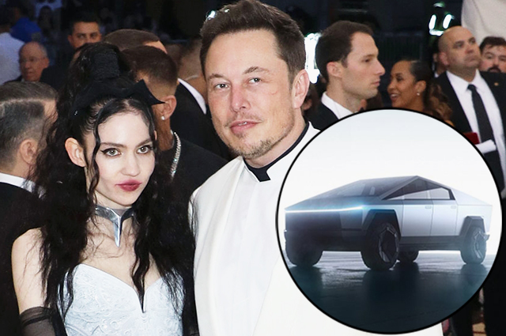

Кибертрак» (Cybertruck), новейший электрический пикап «Теслы» (Tesla), уже здесь, выглядит этаким треугольником из будущего и может вынести удар кувалдой по двери без единой вмятины. Пусть каждый день на нем не поездишь, но если хочешь похвалиться мастерством в производстве электромобилей — что и сделал генеральный директор Tesla и SpaceX Илон Маск (Elon Musk) на шикарном мероприятии в Лос-Анджелесе — то лучше модели не сыскать. Заодно и ради прикола Маск продемонстрировал еще одну новинку от «Теслы» — электрический же квадроцикл. Сайт «Теслы» сообщает, что производство грузовых автомобилей запланировано на конец 2021 года.

Базовая версия Cybertruck с одним мотором обойдется вам в 39 900 долларов — пробег 400 км, максимальная масса буксируемого прицепа 3 400 кг, разгон до 100 км/ч за 6,5 сек. Версия с двумя двигателями стоит 49 000 долларов, тянет 4 500 кг и разгоняться до сотни за 4,5 секунды с пробегом 300 миль с пробегом 480 км. Флагман модельного ряда стоит от 69 900 долларов, проезжает 800 км без подзарядки, буксирует до 6 400 кг и будет запущен в производство в конце 2022 года. У последней модели, как явствует из слайда, который показал Маск, будет аж три мотора, но компоновку генеральный директор не уточнил. (При одномоторной компоновке двигатель обычно устанавливается на заднюю ось, а при двухмоторной — по двигателю на каждую ось).
48-летний основатель компании Tesla Илон Маск в конце ноября представил свое последнее изобретение — электропикап Cybertruck. А на выходных он на своем примере решил продемонстрировать, что эта машина явно достойна внимания. Вместе со своей 31-летней возлюбленной певицей Граймс, а также дизайнером Tesla Францем фон Хольцхаузеном Маск в субботу отправился в ресторан Nobu в Малибу как раз на недавно разработанном средстве дорожного передвижения, за рулем которого его и засняли очевидцы.
